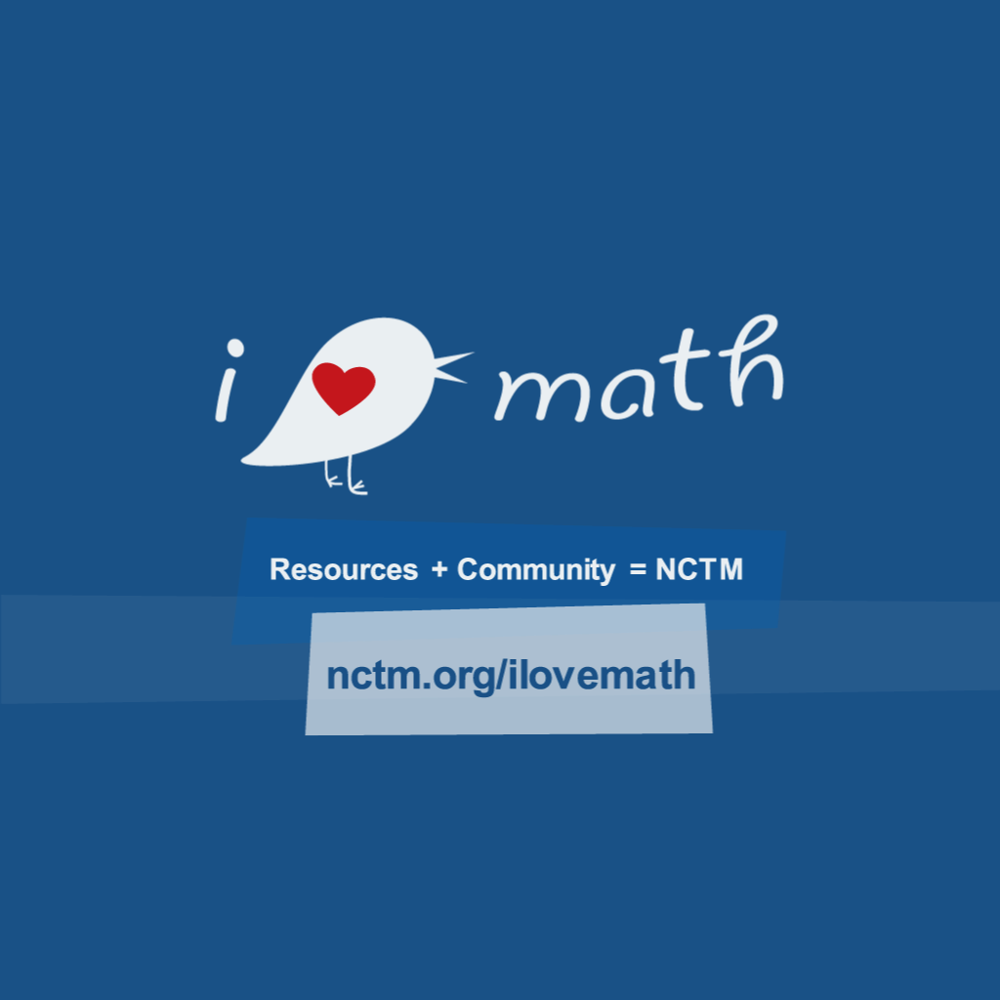
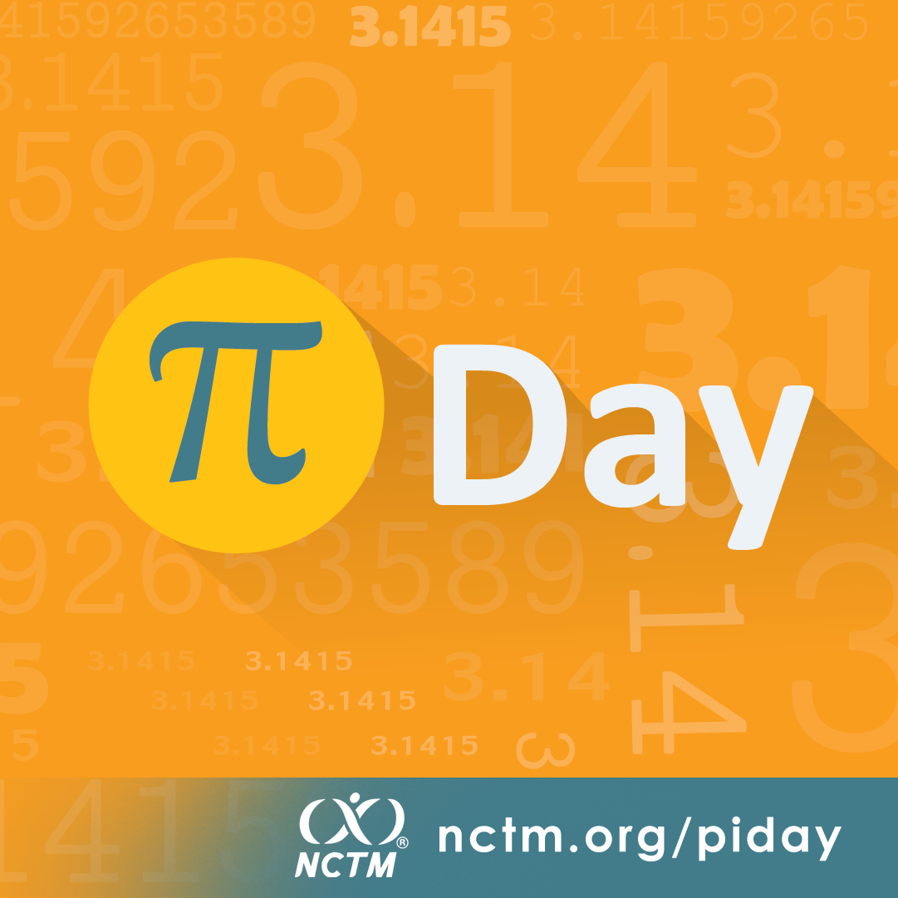

Web Design ● UX/UI ▲ Visual Design ◆ Illustration ■ Brand ● Animation ▲ Product Design ◆ Photography ■Web Design ● UX/UI ▲ Visual Design ◆ Illustration ■ Brand ● Animation ▲ Product Design ◆ Photography ■Web Design ● UX/UI ▲ Visual Design ◆ Illustration ■ Brand ● Animation ▲ Product Design ◆ Photography ■Web Design ● UX/UI ▲ Visual Design ◆ Illustration ■ Brand ● Animation ▲ Product Design ◆ Photography ■
Role
- Visual Designer
- Illustrator
- Animator
- Brand Designer
01Instagram
Stopping the scroll, in a square
Square, 1:1: sized for a social feed. Two of the three are animated GIFs.

01 · I Love Math (GIF)

02 · Pi Day
 03 · Euler (GIF)
03 · Euler (GIF)
03Web banners
Small, so every pixel counts
Standard web banners at their real 300 × 250 pixels (the first is a 600 × 500 version of the same format, shown at 300 × 250).
01 · My NCTM
02 · Summer
03 · Dr
04 · Leaders
05 · Webinar
06 · Met
07 · Blog
08 · Online events
09 · Books
Back to Graphic Design